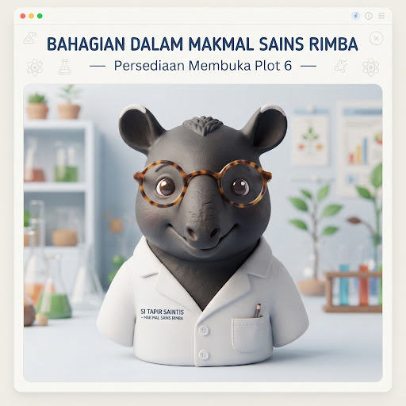

Pusat Botani & Makmal Rimba 🌱
Tinjau stesen penyelidikan botani tropika bersama Si Tapir Saintis sebelum Plot 6 dibuka secara rasmi untuk penerokaan Kampung Wira!

Syarat Buka Plot 6
Kemajuan Persediaan Makmal Rimba

"Selamat datang ke Makmal Sains Rimba, Wira Adam! Di sini kita mengkaji flora hutan hujan Malaysia seperti bunga Rafflesia, orkid liar, dan pokok periuk kera. Jom selesaikan 1 lagi cabaran botani untuk membuka plot ini sepenuhnya!"
3 Stesen Eksplorasi Botani
KSSR Sains Tahun 1: Tumbuh-tumbuhan di Sekeliling Kita
Terrarium Orkid Hutan & Titisan Embun
Kaji keperluan daun menyerap cahaya matahari & embun pagi.
Ekstrak Klorofil & Pewarna Alami Daun
Uji pigmen hijau daun pandan, kunyit dan bunga telang.
Inkubator Serangga Pendebunga Rimba
Perhatikan lebah kelulut dan rama-rama Raja Brooke mendebunga.
Apakah yang diperlukan oleh tumbuhan hijau untuk menghasilkan makanan sendiri?